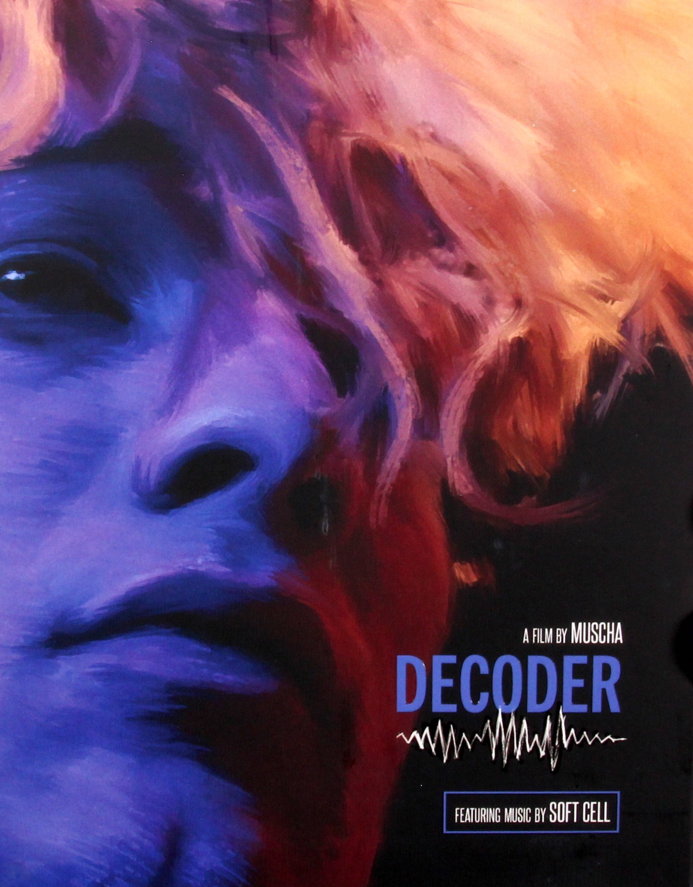

STRANGE DAYS
Kathryn Bigelow | Estados Unidos | 145 min | 1995

DECODER
Muscha | Alemania | 87 min | 1984Sci-Fi
STRANGE DAYS
Kathryn Bigelow | Estados Unidos | 145 min | 1995DECODER
Muscha | Alemania | 87 min | 1984